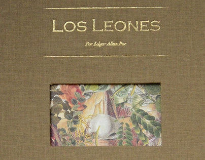
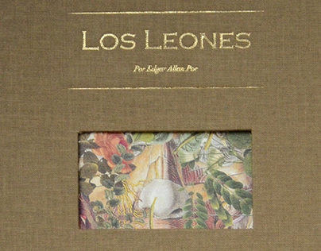

Semblanza
Los leones
El timo
 


X en un suelto
El hombre de necogios
William Willson


(Considerado como una de las ciencias exactas)
Hey diddle diddle.
The cat and the fiddle.
Desde que el mundo empezó ha habido dos Jeremías. Uno de ellos escribió una jeremiada sobre la usura, y se llamaba Jeremías Bentham. Fue sumamente admirado por Mr. John Neal, y era un gran hombre en pequeña escala. El otro dio nombre a la más importante de las ciencias exactas y era un gran hombre en gran escala; bien puedo agregar que en la mayor de las escalas.
El timo —o la idea abstracta contenida en el verbo timar es cosa bien conocida. El hecho, sin embargo, la cosa en sí, el timo, no se define fácilmente. Podemos llegar a tener, sin embargo, una concepción aceptable del asunto, si definimos, no la cosa en sí, el timo, sino al hombre como un animal que tima. Si Platón hubiera dado con esto, se hubiera ahorrado la afrenta del pollo desplumado.
A Platón le preguntaron, muy pertinentemente, por qué un pollo desplumado, que respondía perfectamente a la condición de «bípe do implume», no entraba en su definición del hombre. Pero a mí no vendrán a importunarme con preguntas parecidas. El hombre es un animal que tima y, fuera de él, no existe ningún animal que lo haga. Para invalidar esta afirmación haría falta todo un gallinero de pollos pelados.
Aquello que constituye la esencia, el núcleo, el principio del timo, sólo se encuentra en esa clase de criaturas que visten chaquetas y pantalones. Un cuervo roba, un zorro engaña, una comadreja triunfa por el ingenio, un hombre tima. Su destino es el timo. «El hombre fue hecho para lamentarse», afirma el poeta. Pero no es así: fue hecho para timar. Tal es su ambición, su objeto, su fin. Y por eso cuando a un hombre le han hecho un timo decimos que está «acabado».
Bien considerado, el timo es un compuesto cuyos ingredientes consisten en la pequeñez, el interés, la perseverancia, el ingenio, la audacia, la nonchalance, la originalidad, la impertinencia y la risita socarrona.
Pequeñez.- Nuestro timador practica sus operaciones en pequeña escala. Su negocio reside en la venta al por menor, en efectivo o con pagaré a la vista. Si alguna vez se deja tentar por especulaciones de gran vuelo, inmediatamente pierde sus rasgos distintivos y se convierte en lo que denominamos «financiero». Este último término contiene la noción del timo en todos sus aspectos mencionados, salvo la pequeñez. Por eso un timador puede ser considerado como un banquero en potencia, y una «operación financiera», como un timo en Brobdingnag 121. El uno es al otro como Homero a «Flaccus», como un mastodonte a un ratón, como la cola de un cometa a la de un cerdo.
Interés. - Nuestro timador se guía por el interés. No le atrae el timo por el timo mismo. Tiene una finalidad a la vista: su bolsillo... y el tuyo. Busca siempre la oportunidad mayor. Sólo vela por el Número Uno. Tú eres el Número Dos, y debes velar por ti mismo.
Perseverancia.- Nuestro timador persevera. No se de scorazona fácilmente. Aunque quiebren los bancos, no se preocupa. Con tinúa tranquilamente con su negocio, y Ut canis a corio numquam absterrebitur uncto, y así procede él con lo suyo.
Ingenio. - Nuestro timador es audaz. Es hombre os ado. Traslada la guerra al África. Todo lo conquista por asalto. No temería lo s puñales de Frey Herren. Con un poco más de prudencia, Dick Turpin hubiera sido un buen timador; Daniel O’Connell, con un poco menos de adulaciones, y Carlos XII, con una pizca más de cerebro.
«Nonchalance». - Nuestro timador es displicente. No se pone nunca nervioso. Nunca tuvo nervios. Imposible hacerle perder la calma. Jamás se lo sacará de sus casillas; lo más que puede hacerse es sacarlo de la casa. Es frío, frío como un pepino. Es tranquilo, «como una sonrisa de Lady Bury». Es blando y accesible , como un guante viejo o las damiselas de la antigua Baia.
Originalidad. - Nuestro timador es original, y lo es deliberadamente. Sus pensamientos le pertenecen. Le parecería despreciable hacer uso de los ajenos. Rechaza todo timo gastado. Estoy seguro de que devolvería una cart era si se diese cuen ta de que la había obtenido mediante un timo sin originalidad.
Impertinencia.- Nuestro timador es impertinente. Fanfarronea. Pone los brazos en jarras. Mete las manos en los bolsillos del pantalón. Se ríe irónicamente en nuestra cara. Nos pisa los callos. Nos come la cena, se be be nuestro vino, nos pide dinero prestado, nos tira de la nariz, da de puntapiés a nuestro perro y besa a nuestra mujer.
Risita socarrona .- Nuestro verdadero timador hace el balance final con una risita socarrona. Pero sólo él es testigo de ella. Sonríe cuando el trabajo cotidiano ha terminado, cuando las labores han llegado a su fin; de noche, en su despacho, y para su entretenimiento privado. Va a su casa. Cierra la puerta. Se desnuda. Sopla la vela. Se acuesta. Apoya la cabeza en la almohada. Y hecho esto, nuestro timador sonríe. No se trata de una hipótesis. Es así, es elemental. Razono apriori, y un timador no lo sería sin la risita socarrona.
El origen del timo se remonta a la infancia de la raza humana. Quizá el primer timador fue Adán. De todos modos, podemos seguir las huellas hasta una antigüedad muy remota. Los modernos, empero, han llevado el timo a una imperfección que jamás soñaron los cabezaduras de nuestros progenitores. Por eso, sin detenerme a hablar de los viejos timadores, me contentaré con un compendio de «ejemplos» modernos.
He aquí un excelente timo: En busca de un sofá, una señora recorre sucesivamente varias mueblerías. Llega finalmente a una que ofrece un variado surtido. La detiene en la puerta un locuaz caballero, quien la invita a entrar. No tarda la dama en descubrir un sofá que se adapta perfectamente a sus deseos, y al preguntar su precio se entera con gran placer de que cuesta un veinte por ciento menos de lo que esperaba. Como es natural, se apresura a finiquitar la compra, recibe una factura con recibo y deja su dirección con encargo de que el mueble le sea remitido lo antes posible, retirándose entre una profusión de inclinaciones y cortesías del vendedor. Llega la noche, pero no el sofá. Pasa el día siguiente, y nada. La dama envía a su criada para que averigüe lo que ocurre. En la mueblería niegan que se haya hecho tal compra. No se ha ve ndido ningún sofá ni se ha recibido ningún dinero; quien lo recibió es el timador, que ha sustituido diestramente al verdadero vendedor.
Nuestras mueblerías están siempre desatendidas y proporcionan en esta forma todas las facilidades para una triquiñuela semejante. Los visitantes entran, miran los muebles y vuelven a salir sin que nadie los vea ni los atienda. Si alguien desea comprar un artículo, hay una campanilla al alcance de la mano, la cual se considera harto suficiente.
He aquí otro respetable timo: Un señor bien vestido entra en un negocio, compra por valor de un dólar y descubre con gran mortificación que se ha dejado la cartera en otra chaqueta. Dice entonces al tendero:
—¡No se preocupe, señor mío! Le pido simplemente que tenga la gentileza de mandar el paquete a casa. ¡Un momento! Ahora que recuerdo, tampoco hay en casa billetes por debajo de cinco dólares. De todas maneras, junto con el paquete puede usted mandar cuatro dólares de vuelto.
—Muy bien, señor —replica el tendero, que se ha formado de inmediato una alta idea de su cliente. «Conozco individuos —piensa— que se habrían echado el paquete al brazo, prometiendo volver a pagar cuando pasaran otra vez por aquí.»
De inmediato despacha a un mandadero con el paquete y el vuelto. En el camino, casualmente, se encuentra éste c on el cliente, quien exclama:
—¡Ah, mi paquete! Creí que lo habrían mandado a casa hace rato. Bueno, vete. Mi esposa, Mrs. Trotter, te dará los cinco dólares, pues ya está enterada. Mejor es que me des el vuelto a mí, pues necesito algo de cambio para el correo. ¡Perfecto! Uno, dos... ¿es buena esta moneda? Tres, cuatro... ¡muy bien! Di a Mrs. Trotter que te encontraste conmigo, y no pierdas tiempo por la calle.
El chico no pierde tiempo... pero tarda muchísimo en regresar a la tienda, pues le resulta imposible encontrar a ninguna señora que responda al nombre de Mrs. Trotter. Se consuela, empero, pensando que no ha sido tan tonto como para dejar la mercadería sin recibir dinero en cambio, y cuando aparece en el negocio con aire satisfecho se queda muy perplejo e indignado al preguntarle su amo qué ha hecho con el vuelto...
He aquí un timo muy sencillo: Una persona con aire de funcionario presenta al capitán de un buque que se dispone a zarpar una factur a sumamente módica de gastos portuarios. Contento de tener que pagar tan poco, y atareado con las mil obligaciones que lo asedian en ese momento, el capitán paga la nota sin tardar. Quince minutos después le llega otra factura, mucho más razonable, y la persona que se la entrega no tarda en convencerlo de que el primer funcionario era un timador.
El siguiente timo es parecido: Un vapor suelta amarras y está a punto de separarse del muelle. Un viajero, con el abrigo al brazo, corre presuroso para no perder el barco. De pronto se detiene, se agacha y recoge algo del suelo con evidentes muestras de agitación.
—¿Alguno de los presentes ha perdido una cartera? —grita.
Nadie puede contestarle, pero al subir a bordo se produce un gran revuelo, pues no
tarda en verse que la cartera contiene una gruesa suma. Empero, el barco no puede demorar
su salida.
—El tiempo y la marea no esperan a nadie —dice el capitán.
—¡Por favor, esperemos un momento! —exclama el que ha encontrado la cartera—.
¡Sin duda, no tardará en presentarse el dueño!
—¡Imposible! —responde autoritariamente el capitán—. ¡Fuera la planchada!
—¿Qué voy a hacer? —pregunta el viajero, lleno de tribulación—. Me alejo del país por muchos años y mi conciencia me impide partir llevándome esta suma que no me pertenece. ¡Perdone usted, señor —agrega, di rigiéndose a un caballero que ha quedado en el muelle—, pero su aspecto me parece el de una persona honesta! ¿Tendría usted la gentileza de hacerse cargo de esta cartera? Estoy seguro de que puedo confiar en usted y que no dejará de publicar un anuncio del hallaz go. La suma que hay en la cartera es muy considerable. No hay duda de que el dueño insi stirá en ofrecerle una recompensa por su honradez...
—¿A mí? ¡No, por cierto! ¡A usted! ¡Usted encontró la cartera!
—En fin, si lo toma usted así... Aceptaría una pequeña recompensa... simplemente para
calmar sus escrúpulos. Veamos... ¡Imposible, estos billetes son todos
de a cien! No puedo tomar tanto...; bastaría con cincuenta...
—¡Fuera la planchada! —repite el capitán.
—Pero no tengo cambio de cien, y me parece que lo mejor...
—¡Suelta ese cabo! —grita el capitán.
—¡No se preocupe usted! —exclama el caballero del muelle, que ha estado revisando
su propia cartera—. ¡Aquí tengo un billete de cincuenta del Banco Norteamericano!
¡Páseme usted la cartera!
Y el superescrupuloso viajero toma el dinero con marcada resistencia y alcanza la cartera al caballero del muelle, mientras el vapor humea y silba al abandonar el amarradero. Media hora más tarde se descubre que la «gruesa suma» consiste en billetes falsificados y que todo el episodio no era más que un formidable timo.
Un timo audaz es el siguiente: Va a celebrarse una reunión rural o algo parecido en un lugar sólo accesible por medio de un puente. El timador se instala en la cabecera del puente e informa respetuosamente a todos los que llegan que la nueva ley del condado establece un peaje de un centavo por peatón, dos por caballos y burros, etc. Algunos protestan, pero todos se someten y el timador se vuelve a casa con cincuenta o sesenta dólares bien ganados, pues cobrar un peaje a una gran multitud es trabajo muy fatigoso.
He aquí un timo muy hábil: Un amigo del timador acepta un pagaré de éste, debidamente llenado y firmado en uno de los formularios usuales impresos en tinta roja. El timador compra una o dos docenas de dichos formularios y diariamente moja uno de ellos en su sopa, hace que su perro salte para atraparlo y finalmente se lo cede como un buen bocado. Cuando el pagaré llega a su vencimiento, el timador y su perro se presentan en casa del amigo y se habla del documento en cuestión. El amigo lo saca de su escritorio y va a alcanzarlo al timador cuando el perro reconoce el formulario y de un salto lo atrapa y lo devora. El timador se muestra no sólo sorpre ndido sino vejado y furioso por la absurda conducta de su perro, y se mani fiesta dispuesto a cancelar la obligación... en el momento en que le presenten una prueba de que existe.
Un pequeño timo tiene lugar en esta forma: Una señora es insultada en la calle por el cómplice del timador. Éste acude en defensa de la dama y, luego de dar una soberana paliza a su amigo, insiste en acompañar a la señora hasta su domicilio. Una vez allí, se inclina con la mano sobre el corazón y se despide respetuosamente. Pero la dama ruega a su salvador que entre, a fin de presentarle a su papá y a su hermano mayor. Con un suspiro, el salvador declina la invitación.
—¿No hay, pues, un medio, señor, de testimoniarle mi gratitud? —murmura la dama.
—Por supuesto que sí, señora. ¿Podría usted prestarme dos chelines?
Bajo la impresión que le causan estas palabras la dama decide primeramente
desmayarse. Pero lo piensa mejor y, luego de soltar los lazos de su bolso, hace entrega del
dinero pedido. Como he dicho, este timo es muy modesto, pues hay que entregar la mitad
de la suma obtenida al caballero que se tomó el trabajo de insultar a la señora y debió luego
aguantar sin resisten
cia una buena paliza.
El que sigue es también un timo menudo, pero científico. El timador se acerca al mostrador de una taberna y pide dos rollos de tabaco. Una vez que se los entregan, los examina y declara: —No me gusta este tabaco. Tómelo y déme en cambio un vaso de coñac. Bebe el coñac y se encamina a la puerta. Pero la voz del tabernero lo detiene: —Me temo, señor, que se ha olvidado de pagar la bebida. —¿Pagar la bebida? ¿No le di el tabaco a cambio del coñac? ¿Qué más quiere usted? —Pero, señor... no recuerdo que me haya pagado el tabaco. —¿Qué quiere decir con eso, bribón? ¿No le devolví su tabaco? ¿No es ése su tabaco, encima del mostrador? ¿Pretende entonces que pague por algo que no me llevo? —Pero, señor... —dice el tabernero, completamente confundido—. Pero, señor... —Nada de peros conmigo —interrumpe el timador, aparentemente muy disgustado y golpeando la puerta al alejarse—. ¡Nada de peros conmigo, y mucho menos esas triquiñuelas con los viajeros!
El timo siguiente es muy hábil, y la simplicidad no es una de sus menores cualidades. En ocasión de haberse perdido realmente una cartera o un bolso, el perdedor inserta en uno de los periódicos de una gran ciudad un aviso lleno de detalles. Nuestro timador copia los detalles, cambiando el encabezamiento, la fraseología general, y el domicilio. Si, por ejemplo, el aviso original es largo, verboso y comienza: ¡CARTERA EXTRAVIADA!,solicitando que la misma sea entregada en el número 1 de la calle Tom, la copia fabricada por el timador será breve, sólo encabezada por la palabra EXTRAVÍO, y dará como domicilio el 2 de la calle Dick o el 3 de la calle Harry. Inserta su aviso en cinco o seis periódicos de la localidad que aparecen unas pocas horas después que el original. Si el que ha perdido la cartera lee uno de estos avisos, no es muy probable que advierta la relación que existe con el suyo. Y, en cambio, hay cinco o seis probabilidades contra una de que la persona que encontró la cartera se presente a la dirección dada por el timador en vez de acudir a la del verdadero dueño. Nuestro timador paga la recompensa, embolsa el tesoro y desaparece.
Un timo análogo es el siguiente: Una dama acaudalada ha perdido en la calle un anillo de brillantes de grandísimo valor. Ofrece una recompensa de cuarenta o cincuenta dólares, agregando en su aviso una minuciosa descripción de la joya, sus engastes, y afirmando que la recompensa será pagada en determinado domicilio contra entrega de l anillo y sin que se hagan preguntas.
Un día o dos más tarde, cuando la dama se halla ausente de su casa, se oye sonar la campanilla; acude una criada, informando al visitante que la señora ha salido, noticia que produce en éste el más lamentable de los efectos. Afirma que lo trae una cuestión de suma importancia y que concierne solamente a la señora. Agrega, por fin, que ha tenido la buena suerte de hallar el anillo. De todas maneras, quizá sea mejor que vuelva otro día... «¡De ninguna manera!», exclama la criada. «¡De ninguna manera!», corean la hermana de la señora y su cuñada, que acuden al punto. Todas ellas identifican clamorosamente el anillo, pagan la recompensa y hacen salir al visitante poco menos que a empujones. La dueña de la casa regresa y no tarda en manifestar cierto disgusto hacia su hermana y su cuñada por la sencilla razón de que acaban de pagar cuarenta o cincuenta dólares por un facsímile de su anillo de brillantes, muy bien hecho con similor y piedras falsas.
Pero como el timo es cosa infinita, también lo sería este artículo, aunque me limitara a sugerir apenas la mitad de las variantes y los matices de que dicha ciencia es susceptible. Como he de concluir estas páginas, nada mejor que hacerlo con una noticia resumida de un timo muy decente, pero más bien complicado, del que fue teatro no hace mucho nuestra ciudad, y que se repitió más tarde con buen éxito en otras ciudades todavía más inocentes de nuestro país.
Un caballero de edad mediana llega a la ciudad, sin que se sepa de dónde procede. Se conduce de manera notablemente precisa, cauta y reflexiva. Viste con toda corrección, sin que haya en él nada de ostentoso. Lleva corbata blanca, amplio chaleco, sólo destinado a la comodidad; confortables zapatos de gruesa suela y pantalones sin trabilla. En suma, tiene el aire de nuestro acomodado, sobrio y respetable hombre de negocios par excellence; uno de esos caballeros exteriormente severos y duros, pero tiernos por dentro, como suelen pintarse en las comedias; hombres cuyas palabras son otras tantas garantías, y que mientras distribuyen guineas con una mano para fines caritativos extraen hasta el último centavo con la otra en el terreno de sus propios negocios.
Nuestro caballero se muestra muy difícil de complacer en lo que respecta a una casa de pensión. No le gustan los niños. Está habituado a una gran quietud. Tiene costumbres metódicas y además le gustaría habitar en casa de una familia pequeña y respetable, de tendencias piadosas. Las condiciones de pago lo tienen sin cuidado; insiste solamente en que liquidará la cuenta el primero de cada mes (estamos ahora a dos), y una vez que ha hallado una casa a su gusto, pide encarecidamente a la dueña que no olvide de ninguna manera sus instrucciones al respecto: la cuenta, así como el recibo, deberán ser presentados a las diez de la mañana del día primero de cada mes, y bajo ninguna circunstancia dejados para el día siguiente.
Hechos estos arreglos, nuestro hombre de negocios alquila una oficina en un barrio más respetable que a la moda. No hay cosa que desprecie tanto como la ostentación. «Donde mucho se muestra —suele decir—, poco hay de sólido», observación que impresiona tan profundamente a su casera que se apresura a copiar la a lápiz en la gran biblia de la familia, aprovechando el amplio margen que hay en los Proverbios de Salomón.
El paso siguiente consiste en publicar un aviso en los principales periódicos mercantiles de a seis peniques, pues los de a uno no son considerados por él como «respetables», aparte de que reclaman el pago adelantado de todo aviso, práctica que nuestros hombres de negocios detestan, pues, según él, jamás debe pagarse un trabajo hasta que no esté concluido. El aviso dice aproximadamente así:
SE NECESITAN EMPLEADOS.- En ocasión de iniciar importantes operaciones comerciales en esta ciudad, requerimos los servicios de tres o cuatro inteligentes y competentes empleados. Sueldo importante. Exigimos las mejores recomendaciones sobre la integridad del postulante, que nos interesa aún más que su capacidad. Dado que las obligaciones a cumplir suponen una alta responsabilidad, pues grande s sumas de dinero deberán pasar por las manos de nuestros empleados, consideramos necesario solicitar una caución de cincuenta dólares, que será depositada por el empleado respectivo. Inútil presentarse, por tanto, si no se está en condiciones de hacer dicho depósito, así como de exhibir los mejores testimonios sobre moralidad. Se preferirá a los jóvenes con inclinaciones piadosas. Presentars e de diez a once y de dieciséis a diecisiete en las oficinas de los señores
Bogs, Hogs, Logs, Frogs & Co.
Calle de los Perros, 110
El autor habla acerca de que los seres humanos son los únicos que pueden realizar un timo, que ese es su destino. Nos menciona que el timo se compone por la pequeñez, el interés, la perseverancia, el ingenio, la audacia, la nonchalance, la originalidad, la impertinencia y la risita socarrona, nos explica cada uno de estos componentes además de que nos presenta varios ejemplos de diferentes timos.
En mi opinión el autor nos trata de demostrar como los humanos usan su ingenio para sacar beneficio a si mismos sin importar si llegan a afectar a terceras personas, es decir, nos hace ver la malicia de los humanos lo cual es algo importante de identificar.
Es un texto que nos demuestra la realidad del mundo actual y que no ha cambiado en nada, ya que muchos buscan el beneficio propio sin importar si llegan a perjudicar a terceros.